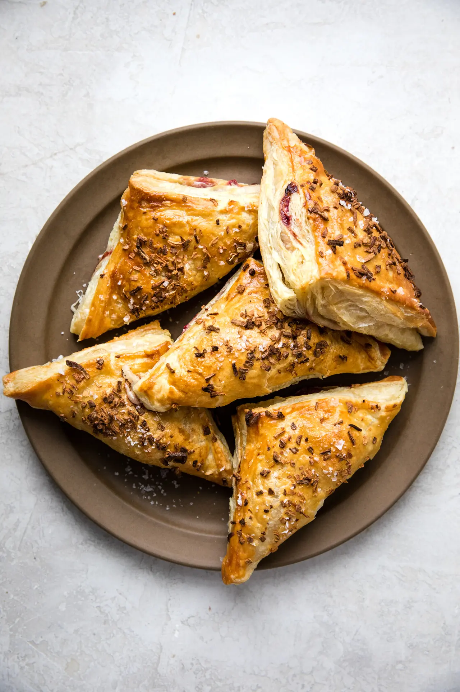

try out this meal and you will always wish you have leftover food.
they actually taste like the main meal
"one bite will last forever"

INGREDIENTS
these ones are very delicious and pretty much a good way to dispose leftover food.
- 2 sheets Frozen puff pastry, thawed*
- 1 Egg, beaten
- 2 Tbsp Dijon mustard
- 1 cup Leftover mashed potatoes
- 3 ounces Gruyère cheese, grated
- ½ cup Cranberry sauce
- 2 cups Shredded leftover turkey
- 1 Tbsp Dried minced onion
HOW TO COOK
- Preheat the oven to 400°F.
- Cut each puff pastry sheet into four squares equal in size, 8 total.
- In a small bowl combine the beaten egg with 2 tablespoons cold water.
- Using a pastry brush, brush a ½ inch egg wash boarder all the way around
the edge of each puff pastry square. This will help the pastry stick together
when you fold it in half.
- Equally divide the dijon mustard, spreading it on the inside of the pastry dough.
- On one half of each of the pastries add 2 tablespoons mashed potatoes,
followed by 3 tablespoons cheese, 1 ounce (2 tablespoons) of turkey and 1 tablespoon cranberry sauce.
Fold the pastry dough over the ingredients and press the edges down tight to seal
- Arrange prepared hand pies on a large parchment lined baking sheet.**
- Brush the tops with remaining egg wash and sprinkle with minced onion and flaky salt..
- Bake on the center rack for 15-18 minutes until golden brown. Serve warm.
back to top
main page